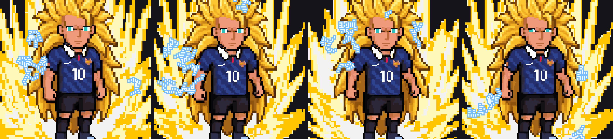
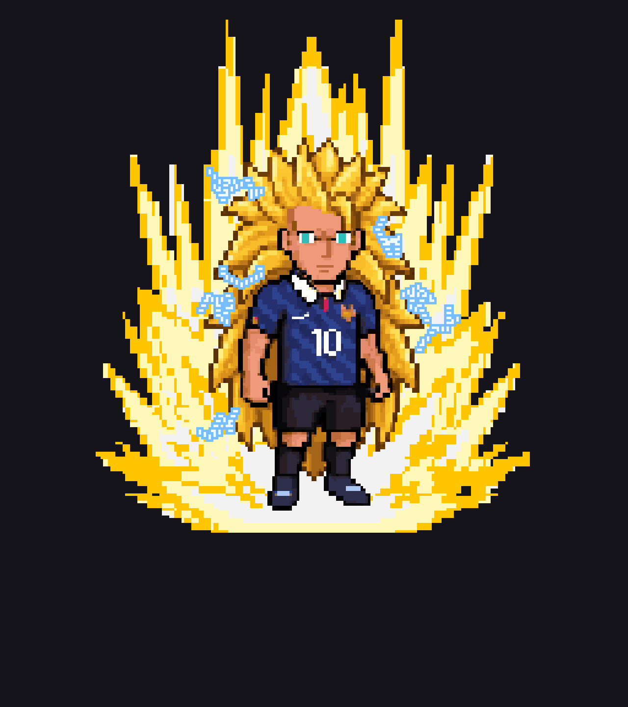
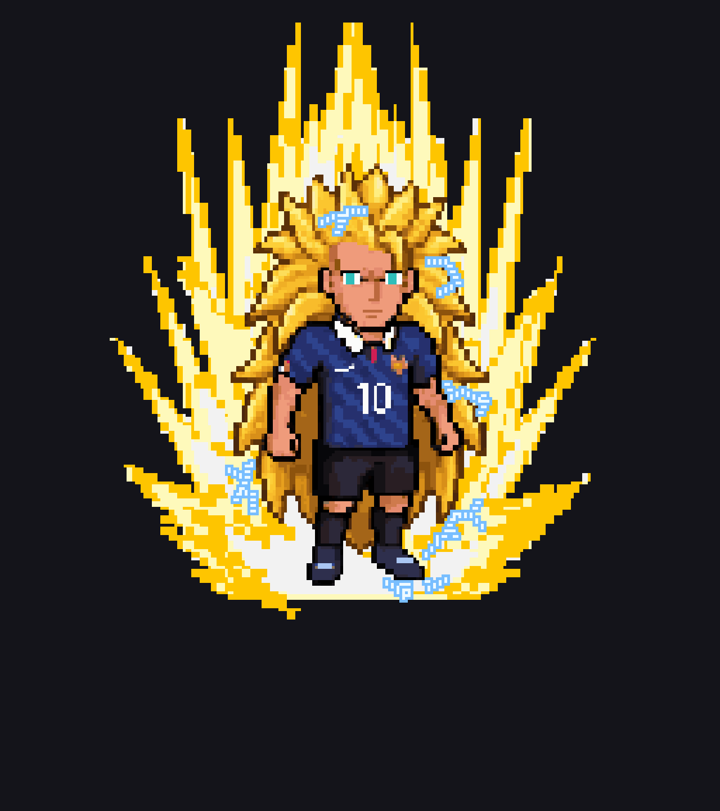
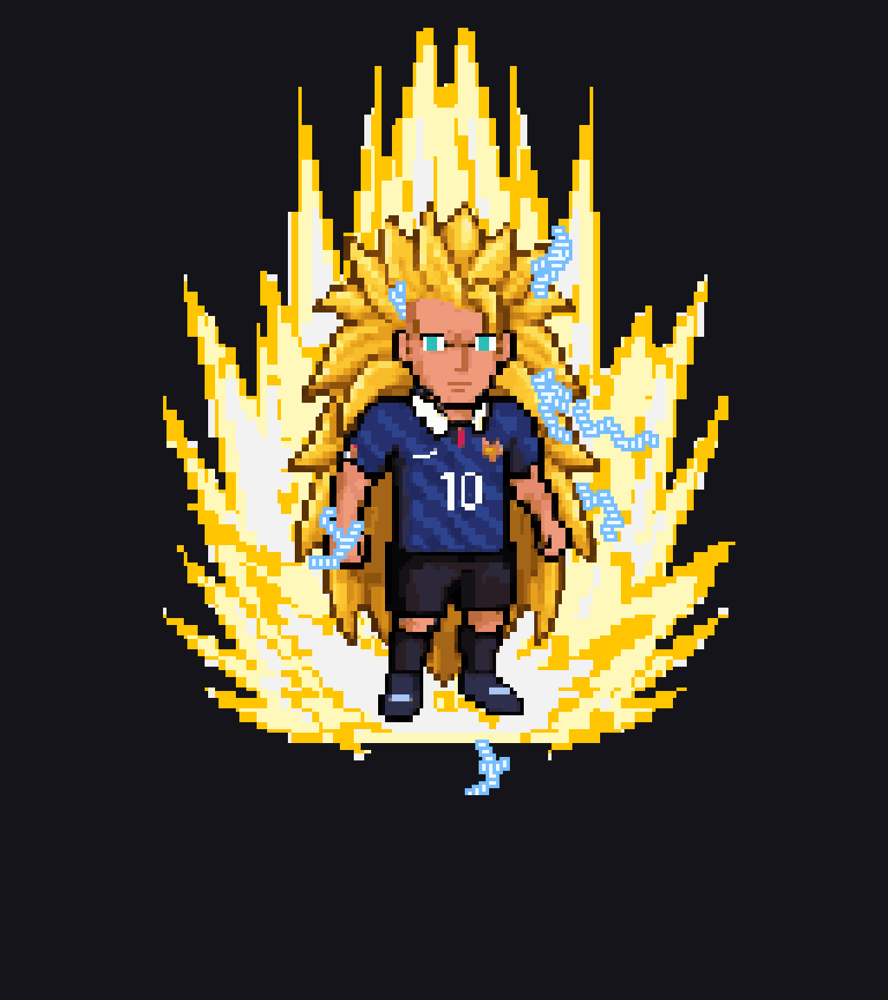
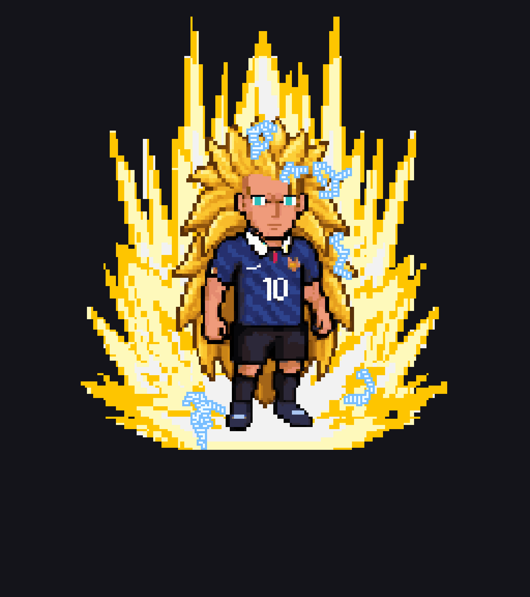
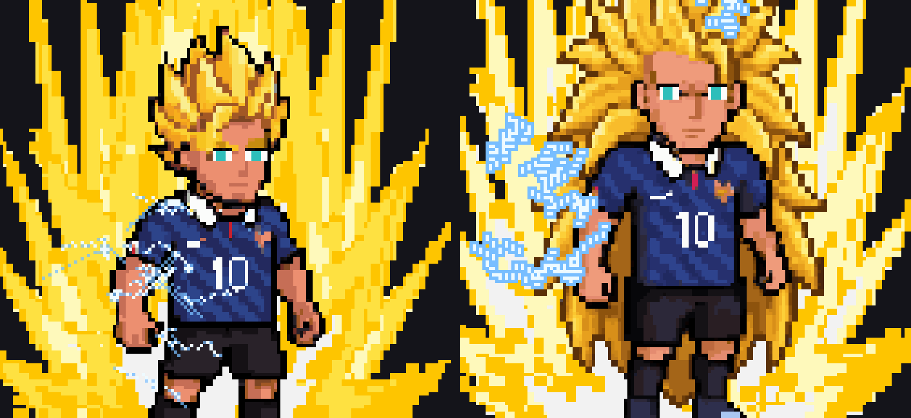

SSJ3 Charging Idle
Static crawling around the shoulders, arms and outer hair



Commit 44fc1d3
SSJ3's electricity is now static discharge rather than sweeping bolts: about a quarter as many arcs, each roughly three times thicker, shorter, and clinging close to the body and hair. SSJ2 is unchanged.
Static crawling around the shoulders, arms and outer hair

Arcs step up from the approved SSJ2 lightning to SSJ3 static


Large frames for inspecting the new arcs




SSJ2 (unchanged) beside SSJ3 (new) — same crop and scale
